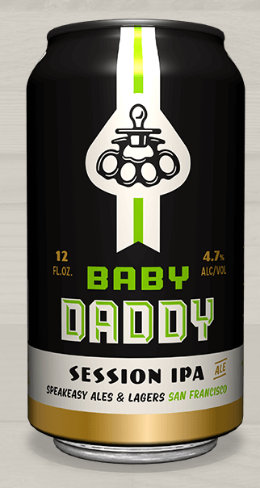

-------------------------------------------------------
-------------------------------------------------------
-------------------------------------------------------
-------------------------------------------------------
Baby Daddy Review
By Adam Aslan

Baby Daddy is a great choice for anyone that wants a highly drinkable beer that is full of flavor. With so many styles of beer available its easy to make an appreciative glance at the noticebly hip design of baby daddy and then get distracted by some other beer in the vast array of beers in the world. Ahh...so many tasty beer fish in the sea.
Indeed, the anonymity of any beer on the shelf in a major city in the US is akin to the modern era of dating. With so many IPAs (not to mention session IPAs) on the market, it’s easy to swipe left on any beer these days, but Baby Daddy seems to be having more success than the rest of the flock these days.
The good tidings have most likely arisen because of the full-bodied IPA taste with a very noticeable grapefruit kick that is still incredibly easy to drink. A quality product coupled with cool packaging and branding that is emblematic Speakeasy ales and lagers ensures Baby Daddy IPA will be a bevy daddies, mommies, and the whole over 21 year old family will be enjoying for a long time. Cheers!
-------------------------------------------------------